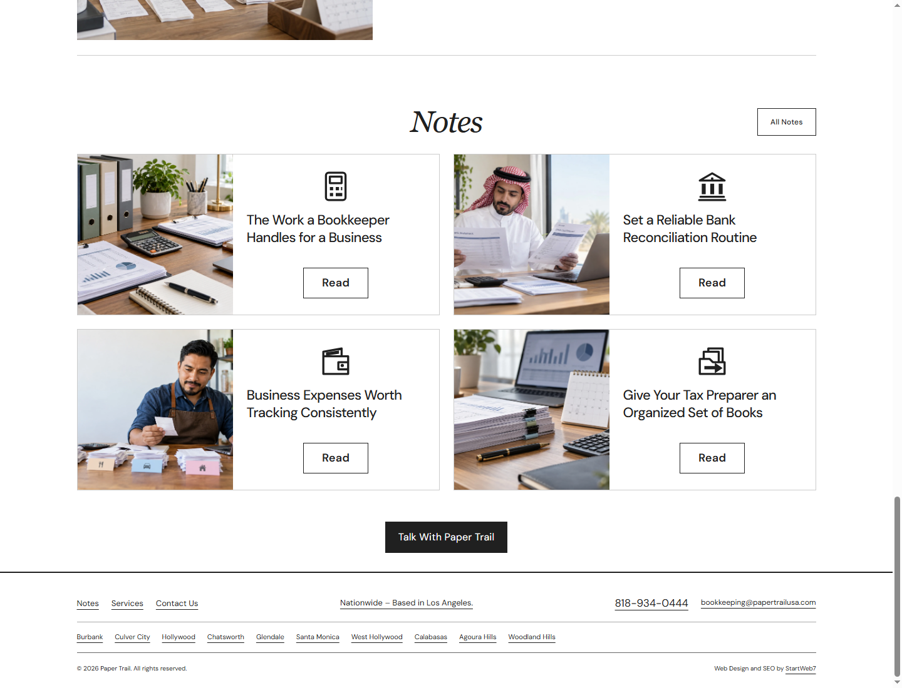
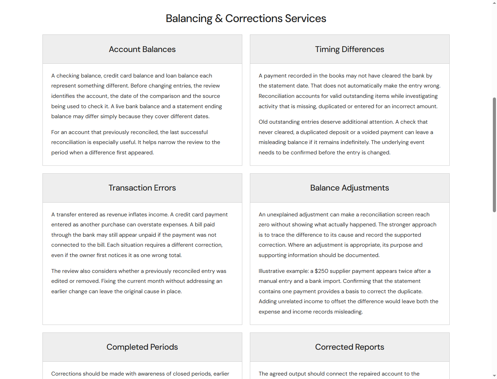
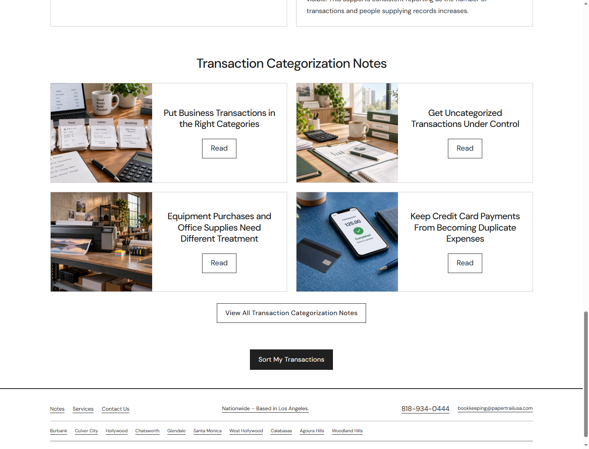
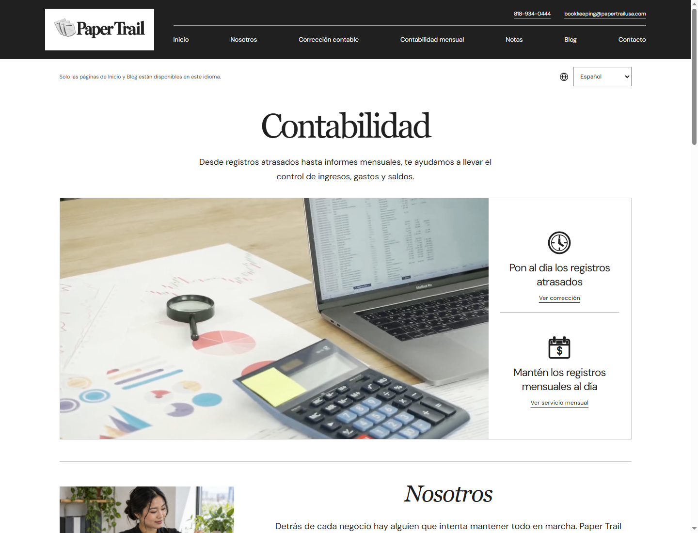
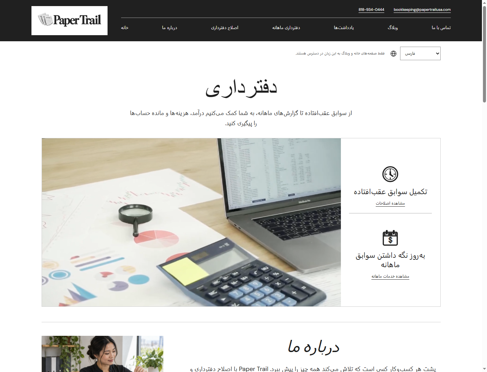

Paper Trail, corrections review
Centered language notices and Notes text, single question chat flow, corrected city headings and button labels, state flag headers, and Blog dates supplied by the owner. The original media assets, brand colors, integrations, and menu design are preserved.
192 pages checked at three sizes, 576 page and device checks. All 60 language checks retained menu and selector positions. Forty two cold loads recorded zero layout shift, including direct file previews. No overflow, missing images, or JavaScript exceptions were observed.
State pages remain local drafts, noindex and outside the published sitemap. Individual factual approval is still required. Prior source checks have 51 automated access limitations. No inquiries, Google API requests, commits, pushes, or publication were performed.













Chat and phone


Before this correction pass
These are the earlier saved screenshots for comparison.